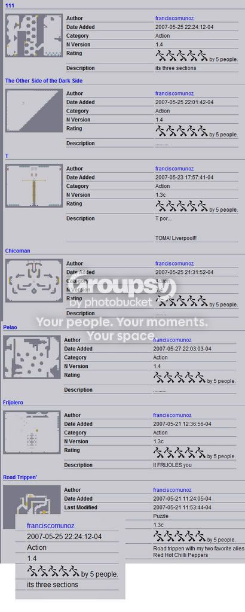

Yep, I think it's kinda obvious that someone's doing a little multi-accounting.
Meh, it'll only last a while.
Hmmm... Looks like somebody needs a life...
Spoiler: Pic

Holay!
Ha ha, thats brilliant.
Not that I'm one to talk.
Not that I'm one to talk.
Well, it looks like the community took care of it with their... er... ratings lowering system  I didn't even rate any of them...
I didn't even rate any of them...
EDIT: Newsflash: Joseto_2 might be the same person as franciscomunoz.
I didn't even rate any of them...EDIT: Newsflash: Joseto_2 might be the same person as franciscomunoz.
It's guys like you, skyline, that make numa a horrible place to stay. His maps were just fine. Is it really that hard for you to believe that some "noob" has maps that people like? I for one enjoy his maps like no other.
Hrmph.
Hrmph.
It's not the fact that people may have liked his maps, it's just the fact that it was blatantly obvious that he didn't naturally get those ratings, considering all of his maps were 5 by 5 people.
Oh wait; this is one of those threads that didn't really need to be made. Hm.
/me goes and sits in a corner.
Oh wait; this is one of those threads that didn't really need to be made. Hm.
/me goes and sits in a corner.
HOLY SH** THIS GUY REALLY NEDDS TO GET A LIFE!!!!!!!!!!!! 
plus he is sick!
plus he is sick!